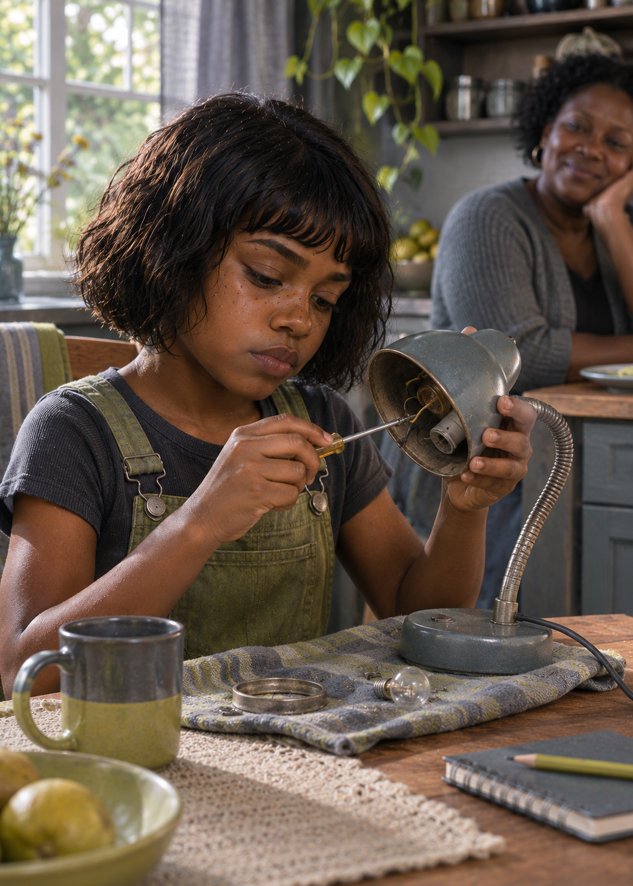

Recuperação de equipamento
Reaproveita peças e mantém kits de reparo simples, com instruções que outras pessoas conseguem seguir sem depender dela.
MANUTENÇÃO COMPARTILHADA // SEM HERÓIS INDISPENSÁVEISAsha não aceita uma rota só porque está desenhada. Ela quer saber o que acontece quando a ponte cede, o motor morre ou o plano deixa de servir às pessoas que estão nele.

Filiação, cronologia e raízes africanas confirmadas pelo autor // país ou região de origem em aberto
Asha nasceu antes do Dia D, numa casa onde Luke deixava mapas sobre a mesa e Imani mantinha livros sempre à mão. As primeiras lembranças dela não são de fuga: são de uma família reunida, de perguntas que ninguém mandava calar e da curiosidade de descobrir como as coisas funcionavam.
Quando o mundo mudou, essa curiosidade ganhou outro peso. Com Imani, Asha aprendeu a organizar o trabalho para que todos pudessem participar; com Luke, ouviu nomes de estradas, travessias e pontos de retorno. Mais tarde, passou a recuperar ferramentas, baterias e peças de veículos abandonados. Testa os equipamentos antes de uma saída e pergunta qual é o plano quando a primeira resposta falha.
Asha não quer provar que o pai está errado. Quer que a família tenha mais de uma maneira de voltar. Sua franqueza às vezes corta uma conversa curta demais; no campo, já evitou que um plano bonito se tornasse uma armadilha.
“Se só existe uma saída, ainda não terminamos de planejar.”
Antes de consertar equipamentos de campo, Asha queria entender como as coisas funcionavam. Esta cena registra a curiosidade em sua primeira oficina: a casa.

Asha lê o terreno pelo que ainda pode ser aproveitado e o equipamento pelo que pode falhar em mãos cansadas.
Reaproveita peças e mantém kits de reparo simples, com instruções que outras pessoas conseguem seguir sem depender dela.
MANUTENÇÃO COMPARTILHADA // SEM HERÓIS INDISPENSÁVEISQuestiona Luke quando o mapa parece perfeito demais e protege Nyla do impulso de carregar sozinha tudo o que a família quer preservar.
LUKE + IMANI + ASHA + NYLAO arquivo dos Carver mostra como cada membro da família transforma uma travessia em uma chance de permanecer juntos.
ABRIR ARQUIVO DA FAMÍLIA →